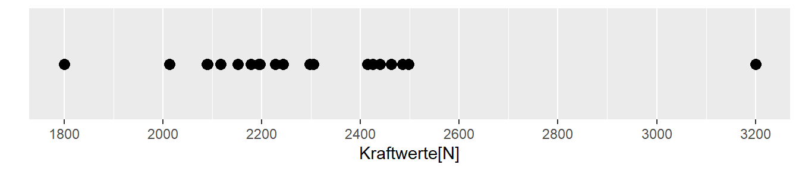
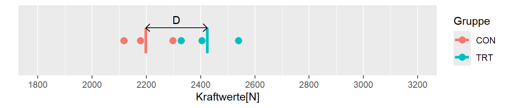
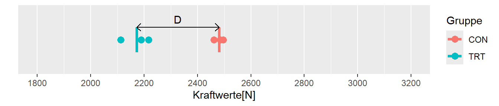
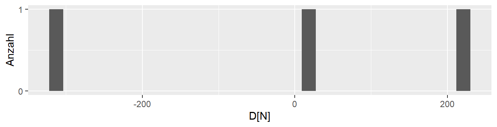
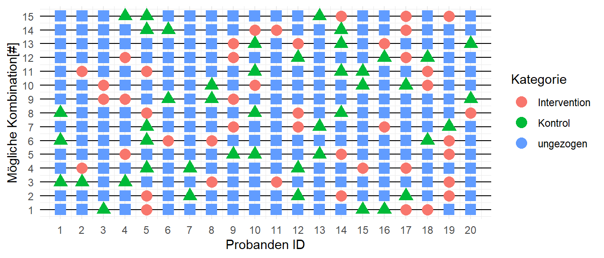
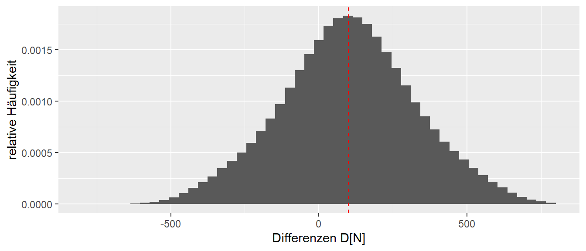
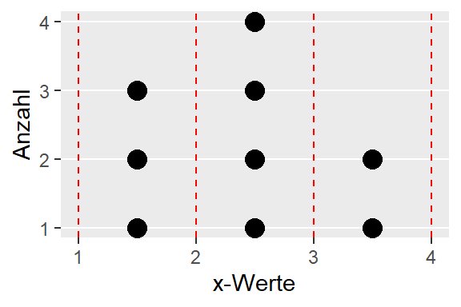
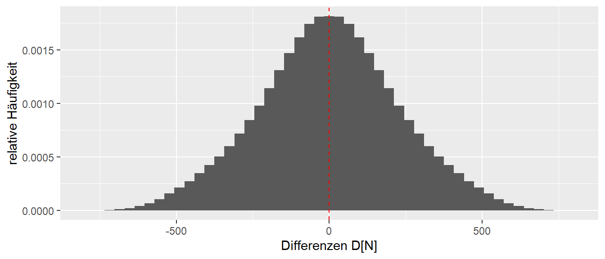
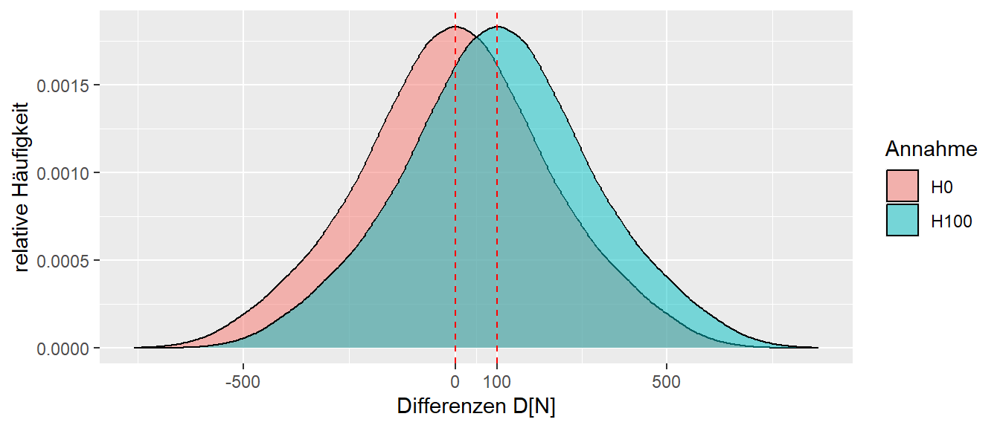
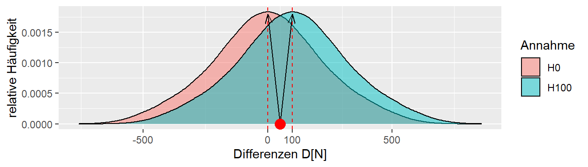

7 Eine kleine Welt der Unsicherheit
Beginnen wir mit eine einfachen Modell. Dazu nehmen beginnen mit einer übersichtlichen kleinen Welt. Die Welt über die wir eine Aussage treffen wollen besteht daher nur aus insgesamt 20 Personen. In Abbildung 7.1 sind Bewohner unserer Welt einzeln zu sehen. Die Gesamtheit aller Personen (allgemein Objekte) über die wir eine Aussage treffen wollen bezeichnen wir als die Population.
Definition 7.1 (Population) Die Gesamtheit aller Objekte/Dinge/Personen über die eine Aussage getroffen werden soll wird als Population oder Grundgesamtheit bezeichnet.
7.1 Ein Experiment
Wir wollen nun ein Experiment, eine Krafttrainingsstudie, durchführen um zu überprüfen ob das Training die Beinkraft erhöht. Wir haben allerdings nur sehr wenige Ressourcen zur Verfügung (bzw. wir sind faul) und können daher nur insgesamt sechs Messungen durchführen. Aus einem kürzlich durchgeführten Census haben wir aber die Beinkraftwerte der ganzen Population. Stellen wir die Kraftwerte zunächst mittels einer Tabelle dar (siehe Tabelle 7.1)
| ID | Kraft[N] |
|---|---|
| P01 | 2414 |
| P02 | 2462 |
| P03 | 2178 |
| P04 | 2013 |
| P05 | 2194 |
| P06 | 2425 |
| P07 | 2305 |
| P08 | 2117 |
| P09 | 2298 |
| P10 | 2228 |
| P11 | 2243 |
| P12 | 2497 |
| P13 | 1800 |
| P14 | 2152 |
| P15 | 2089 |
| P16 | 2090 |
| P17 | 3200 |
| P18 | 2196 |
| P19 | 2485 |
| P20 | 2440 |
Selbst bei 20 Werten ist diese Darstellung mittels einer Tabelle leider wenig übersichtlich. Wir müssen Zeile für Zeile die Tabelle durchgehen und uns spezifische Kennwerte notieren. Beispielsweise könnten wir notieren, dass der Maximalwert der Beinkraft bei \(3200\)N für P17 und der Minimalwert von P13 bei \(1800\)N liegt. Aber wirklich übersichtlich ist die Darstellung in Form einer Tabelle nicht. Für solche univariaten Daten (uni = eins) kann eine übersichtlichere Darstellung mittels eines sogenannten Dotplots erreicht werden (siehe Abbildung 7.2).

Hier kann deutlich schneller abgelesen werden welchen Wert das Minimum bzw. das Maximum annimmt. Die graphische Darstellung erlaubt weiterhin direkt abzuschätzen in welchem Bereich sich der Großteil der Daten befindet. Allerdings wird durch diese Art der Darstellung die Information über welche Person die jeweiligen Werte besitzt nicht mehr dargestellt. Dies stellt allerdings nicht zwingend ein Problem dar, da wir in den meisten Fällen soweiso aussagen über die Gruppe und weniger über einzelne Personen machen wollen. Ein Dotplot hat auch gleichzeitig den Vorteil, dass wir die Verteilung der Werte abschätzen können. In welchem Bereich liegen die meisten Datenwerte? Liegen die Werte eng beineinander oder streuen die Werte sehr stark? Gibt es einzelne Werte die sehr unterschiedlich sind von den anderen Werten? Dies sind alles Fragen die notwendig sind um einen Datensatz und dessen Eigenschaften beurteilen zu können.
Gehen wir jetzt von der folgenden Fragestellung aus. Wir wollen den Gesundheitsstatus unserer Lummerländer verbessern und wollen dazu ein Krafttraining für die Beine durchführen. Da wir evidenzbasiert arbeiten wollen, möchten wir überprüfen ob das Training wirklich ein Verbesserung der Beinkraft durch das Training stattfindet. Um die Experiment zu vereinfachen, und da es sich mehr um eine Gedankenexperiment handelt, gehen wir von einem perfekten Krafttraining aus. D.h wir führen eine perfekte Intervention durch.
Das Beinkrafttraining sei also perfekt und verbessert die Kraftleistung um genau \(+100\)N. Dieser Kraftzuwachs ist unabhängig davon welche Person aus unserer Population das Training durchführt (Ist das eine realistische Annahme?). Um die Effektivität des Training abzuschätzen vergleichen wir zwei Gruppen miteinander. Eine Interventionsgruppe und eine Kontrollgruppe. In beiden Gruppen sollen jeweils \(n_{\text{TRT}} = n_{\text{CON}} = 3\) TeilnehmerInnen bzw. Teilnehmer einbezogen werden da wir nicht mehr Ressourcen für mehr ProbandInnen haben.
Um die spätere Diskussion zu vereinfachen, führen wir etwas Terminologie ein.
Definition 7.2 (Abhängige Variablen ) Die abhängige Variable ist diejenige Variable, die in einer Studie beobachtet, gemessen oder analysiert wird. Die abhängige Variable wird oft als “Effekt” betrachtet.
Definition 7.3 (Unabhängige Variable ) Die unabhängige Variable ist die Variable, die in einer Studie oder einem Experiment manipuliert oder kontrolliert wird. Die unabhängige Variable wird oft als “Ursache” betrachtet, da sie den potenziellen Einfluss auf die abhängige Variable repräsentiert.
In unserem Experiment ist die Gruppenzugehörigkeit die unabhängige Variable und die Beinkraft die abhängige Variable. Wir untersuchen den Effekt der Gruppenzugehörigkeit auf die Beinkraft. Die Gruppe ist die Ursache für mögliche Effekte auf die Beinkraft.
Wir gehen jetzt davon aus, dass wir die Daten aus dem Census nicht vorliegen haben. Dies kommt einer tatsächlichen Durchführung des Experiment näher, wo wir auch nicht wissen würden welche Beinkraft die TeilnehmerInnen vor dem Experiment hätten. Die erste Frage die sich nun stellt ist wie wir die sechs Personen aus unserer Population auswählen und wie teilen wir die sechs Personen in die beiden Gruppen auf?
Wir könnten zum Beispiel die ersten drei Personen in die Interventionsgruppe und die letzten drei in die Kontrollgruppe stecken. Allerdings wenn wenn die Personen in irgendeiner Form sortiert sind, z.B. allgemeiner Gesundheitsstatus, Arbeitstätigkeit usw. dann würde diese Sortierung in den Gruppen auftreten. D.h. wir hätten sogenannte Störvariablen die unser Ergebnis verfälschen würden.
Definition 7.4 (Störvariable) Eine Störvariable ist eine Variable die einen Einfluss auf die unabhängige Variable hat, deren Einfluss jedoch nicht kontrolliert wurde bzw. die Variable ist nicht Hauptinteresse der Untersuchung.
Im Zweifelsfall kann davon ausgegangen werden, dass es immer eine ganze Reiche von Störvariablen gibt, von denen ich zum Teil gar nichts weiß, dass sie bestehen. Nach etwas überlegen kommen wir darauf, dass wir am besten eine zufällige Stichprobe ziehen sollten (Warum?). Für führen eine sogenannte Randomisierung durch.
Definition 7.5 (Randomisierung ) Mit Randomisierung wird der Prozess der zufälligen Zuweisung von Probanden oder Elementen zu verschiedenen Gruppen oder Bedingungen in einem Experiment bezeichnet. Die Randomisierung wird verwendet, um sicherzustellen, dass die Auswahl und Zuordnung der Elemente frei von systematischer Beeinflussung erfolgt.
Definition 7.6 (Stichprobe) Eine Stichprobe ist eine Teilmenge der Objekte aus der Population.
Definition 7.7 (Zufallsstichprobe) Eine Zufallsstichprobe ist eine Teilmenge der Objekte aus der Population die zufällig ausgewählt wurde.
Die sechs Personen unserer Stichprobe werden dann zufällig auf die beiden Gruppen aufgeteilt. (Warum zufällig?)
Mit einem Zufallszahlengeneratoren haben wir die Zahlen \(i = \{3,7,8,9,10,20\}\) gezogen. Die entsprechenden Personen werden aus der Population anhand der ID ausgewählt. Anschließend teil wieder ein Zufallszahlengenerator die sechs Personen in die beiden Gruppen ein (siehe Abbildung 7.3).
flowchart TD
A{Population} --> B(Zufallszahlengenerator)
B --> C[Stichprobe]
C --> D(Zufallszahlengenerator)
D --> E[Kontrollgruppe]
D --> F[Interventionsgruppe]
In Tabelle 7.2 ist die Stichprobe und Zuteilung in die Gruppen zu sehen.
| ID | Kraft[N] | Gruppe |
|---|---|---|
| P08 | 2117 | CON |
| P09 | 2298 | CON |
| P03 | 2178 | CON |
| P07 | 2305 | TRT |
| P10 | 2228 | TRT |
| P20 | 2440 | TRT |
Mit diesen sechs Personen führen wir jetzt unser Experiment durch. Die drei Personen aus der Kontrollgruppe, unterlaufen im Interventionszeitraum nur ein Stretchtraining während die Interventionsgruppe zweimal die Woche für 12 Wochen unser perfektes Krafttraining durchführt. Nach diesem Zeitraum messen wir alle Personen aus beiden Gruppen und erhalten das folgende Ergebnis (siehe Tabelle 7.3). Nochmal zur Erinnerung, wir nehmen an, dass wir das Ergebnis aus dem Census nicht kennen.
Tabelle 7.3: Ergebnis der Intervention in Experiment 1 für die Kontroll- und die Interventionsgruppe.
| ID | Kraft[N] |
|---|---|
| P08 | 2117 |
| P09 | 2298 |
| P03 | 2178 |
| \(\bar{K}\) | 2198 |
| ID | Kraft[N] |
|---|---|
| P07 | 2405 |
| P10 | 2328 |
| P20 | 2540 |
| \(\bar{K}\) | 2424 |
Letztendlich haben wir in der Interventionsgruppe nur die Ausgangswerte aus dem Census genommen und \(100\)N dazuaddiert. Für beide Gruppen ist in Tabelle 7.3 jeweils noch der Mittelwert angezeigt, um die Gruppen leichter miteinander vergleichen zu können. Später werden wir noch weitere Maße kennenlernen die es ermöglichen zwei Mengen von Werten miteinander zu vergleichen. Der Mittelwert ist dabei derjenige der wenn schon aus der Schule kennen.
Definition 7.8 (Mittelwert) Der Mittelwert \(\bar{x}\) über \(n\) Werte berechnet sich nach der Formel:
\[ \bar{x} = \frac{\sum_{i=1}^n x_i}{n} \tag{7.1}\]
Der Mittelwert wird mit einem Strich über der Variable dargestellt.
Damit haben wir auch schon direkt ein neues Konzept aus der Statistik kennengelernt. Nämlich das der Statistik. Ein Wert der mittels der Werte aus der Stichprobe berechnet wird, wird als Statistik bezeichnet.
Definition 7.9 (Statistik) Ein auf einer Stichprobe berechnet Wert, wird als Statistik bezeichnet.
Um jetzt Unterschied zwischen den beiden Gruppen zu untersuchen berechnen wir die Differenz D zwischen den beiden Mittelwerten \(D = \bar{K}_{\text{TRT}} - \bar{K}_{\text{CON}}\). Die Differenz kann natürlich auch in die andere Richtung berechnet werden und es würde sich das Vorzeichen ändern. Hier gibt es keine Vorgaben, sondern die Richtung kann frei bestimmt werden. Wenn bekannt ist in welcher Richtung der Unterschied berechnet wird, dann stellt dies keine Problem dar. Im vorliegenden Fall ziehen wir die Interventionsgruppe von der Kontrollgruppe ab, da wir davon ausgehen, dass die Intervention zu einer Krafterhöhung führt und wir dadurch einen positiven Unterschied erhalten (vgl. Gleichung 7.2)
\[ D = 2424N - 2198N = 226 N \tag{7.2}\]
Da der Wert D, wiederum auf den Daten der Stichprobe berechnet wird, handelt es sich ebenfalls um eine Statistik.

In Abbildung 7.4 sind die Werte der beiden Gruppen, deren Mittelwerte \(\bar{K}_{\text{CON}}\) und \(\bar{K}_{\text{TRT}}\) und der Unterschied \(D\) zwischen diesen abgebildet. Wie erwartet zeigt die Interventionsgruppen den höheren Kraftwert im Vergleich zu der Kontrollgruppe. Allerdings ist der Wert mit \(D = 226\) größer als der tatsächliche Zuwachs von \(\Delta_{\text{Training}} = 100\) (Warum ist das so?).
Der Unterschied zwischen den beiden Gruppen ist natürlich auch zum Teil auf die Unterschiede die zwischen den beiden Gruppen vor der Intervention bestanden haben zurück zu führen. Was wäre denn passiert, wenn wir eine andere Stichprobe gezogen hätten?
Sei \(i = \{12,2,19,4,8,16\}\) eine zweite Stichprobe. Dies würde zu den folgenden Werten führen nach der Intervention führen.
| ID | Kraft[N] | Gruppe |
|---|---|---|
| P08 | 2117 | CON |
| P09 | 2298 | CON |
| P03 | 2178 | CON |
| P07 | 2405 | TRT |
| P10 | 2328 | TRT |
| P20 | 2540 | TRT |

In Abbildung 7.5 sind wiederum die Datenpunkte, Mittelwerte und der Unterschied abgetragen. In diesem Fall ist allerdings die Differenz zwischen den beiden Gruppen genau in der anderen Richtung \(D = -308\). Daher würden wir dieses Ergebnisses genau in der anderen Richtung interpretieren. Das Krafttraining führt nicht nur zu keiner Verbesserung in der Kraftfähigkeit, sondern sogar zu einer Verschlechterung!
Es hätte aber auch sein können, das wir noch eine andere Stichprobe gezogen hätten, z.B. \(i = \{6,5,7,20,14,16\}\). Mit dieser Stichprobe würden wir zu folgenden Ergebnis kommen (siehe Tabelle 7.5).
| Gruppe | Kraft[N] |
|---|---|
| CON | 2308 |
| TRT | 2327 |
| \(D\) | 19 |
In diesem Fall haben wird zwar wieder einen positiven Unterschied zwischen den beiden Gruppen in der zu erwartenden Richtung gefunden. Der Unterschied von \(D = 19\) ist allerdings deutlich kleiner als das tatsächlichen \(\Delta = 100\). Daher würden wir möglicherweise das Ergebnis so interpretieren, dass wir das Krafttraining als ineffektiv bewerten und keine Empfehlung für das Training ausprechen würden.
Zu beachten ist, dass keines der Ergebnisse 100% korrekt ist. Entweder der Unterschied zwischen den beiden Gruppen ist deutlich zu groß, oder in der anderen Richtung oder deutlich zu klein. Das Ergebnis des Experiments hängt ursächlich damit zusammen, welche Stichprobe gezogen wird. Diese Phänomen gilt in jedem Fall generell für jedes Ergebnis eines Experiments. Das Phänomen, das der Wert der berechneten Statistik zwischen Wiederholungen des Experiments schwankt wird als Stichprobenvariabilität bezeichnet.
Definition 7.10 (Stichprobenvariabilität) Durch die Anwendung von Zufallsstichproben, variiert eine auf den Daten berechnete Statistik. Die Variabilität wird als Stichprobenvariabilität bezeichnet.
Streng genommen, führt die Stichprobenvariabilität für sich genommen noch nicht dazu, das sich die Statistik zwischen Wiederholungen des Experiments verändert, sondern die zu untersuchenden Werte in der Population müssen selbst auch noch eine Streuung aufweisen. Wenn wir eine Population untersuchen würden, bei der alle Personen die gleiche Beinkraft hätten, würden unterschiedliche Stichproben immer den gleichen Mittelwert haben und wiederholte Durchführungen des Experiment würden immer wieder zu dem selben Ergebnis führen. Dieser Fall ist in der Realität aber praktisch nie gegeben und sämtlich Parameter für die wir uns interessieren zeigen immer eine natürlich Streuung in der Population. Diese Streuung in der Population führt daher zu dem besagten Ergebnis, das das gleiche Experiment mehrmals wiederholt zu unterschiedlichen Zufallsstichproben führt und dementsprechend immer zu unterschiedlichen Ergebnissen führt. Das Ergebnis ist inherent variable bzw. unsicher.
Daher ist eine der zentrale Aufgabe der Statistik mit dieser Variabilität umzugehen und die Forscherin in die Lage zu versetzen trotzdem rationale Entscheidungen zu treffen. Eine implizite Kernannahme dabei ist, das wir mit Hilfe von Daten überhaupt etwas über die Welt lernen können. D.h. das uns die Erhebung von Daten überhaupt auch in die Lage versetzt rationale Entscheidungen zu treffen. Entscheidungen wie ein spezialisiertes Krafttraining mit einer klinischen Population durchzführen oder eine bestimmte taktische Variante mit meiner Mannschaft zu trainieren um die Gegner besser auszuspielen. Alle diese Entscheidungen sollten rational vor dem Hintergrund von Variabilität und Unsicherheit getroffen werden und auch möglichst oft zu korrekten Entscheidungen führen. Wie wir sehen werden, kann uns die Statistik leider nicht garantieren immer die korrekte Entscheidungen zu treffen. Nochmal auf den Punkt gebracht nach Wild und Seber (2000, p.28)
The subject matter of statistics is the process of finding out more about the real world by collecting and then making sense of data.
Untersuchen wir jedoch zunächst das Phänomen, das Wiederholungen des gleichen Experiments zu unterschiedlichen Ergebnissen führt, weiter. In unserem Beispiel aus Lummerland haben wir nämlich den Vorteil, das uns die Wahrheit bekannt ist. In Abbildung 7.6 ist die Verteilung unsere bisheringen drei \(D\)s abgetragen.

Die drei Werte liegen ja relativ weiter auseinander. Eine Anschlussfrage könnte daher sein: “Welche weiteren Werte sind denn überhaupt möglich mit der vorliegenden Population?”.
7.2 Die Stichprobenverteilung
Wir können einfach mal das Experiment weiter wiederholen. In Abbildung 7.7 sind 15 verschiedene Stichproben abgetragen. Wir haben in jeder Zeile jeweils sechs TeilnehmerInnen gezogen. Drei für die Kontrollgruppe und drei für die Inervationsgruppe. Für jede dieser Zeilen können wir jeweils den Gruppenmittelwert berechnen und den Unterschied \(D\) bestimmen.

Warum eigentlich bei 15 aufhören. Wir haben ja den Vorteil, das unsere Population relativ übersichtlich ist. Vielleicht können wir uns ja noch aus unserer Schulezeit an Kombinatorik erinnern. Da haben wir den Binomialkoeffizienten kennengelernt. Die Anzahl der möglichken Kombination von \(k\) Elementen aus einer Menge von \(n\) Elementen berechnet sich nach:
\[ \text{Anzahl} = \binom{n}{k} = \frac{n!}{k!(n-k)!} \tag{7.3}\]
In unserem Fall wollen wir zunächst sechs Elemente aus \(N = 20\) auswählen und dann drei Elemente aus den sechs gezogenen Elementen auswählen um diese entweder der Interventionsgruppe oder der Kontrollgruppe zu zuweisen (Warum brauchen wir uns nur eine Gruppe anzuschauen?). Die Anzahl der möglichen Stichprobenkombinationen ist folglich:
\[ \text{Anzahl} = \binom{20}{6}\binom{6}{3} = 7.752\times 10^{5} \tag{7.4}\]
Das sind jetzt natürlich selbst bei dieser kleinen Population ein große Menge von einzelnen Experimenten, aber dafür sind Computer da, die können alle diese Experiment in kurzer Zeit durchführen. In Abbildung 7.8 ist die Verteilung aller möglichen Experimentausgänge, d.h. alle Differenzen \(D\) zwischen der Interventions- und der Kontrollgruppe, abgebildet.

Auf der x-Achse sind die möglichen Differenzen \(D\) abgetragen, während auf der y-Achse die relative Häufigkeit, d.h. die Häufigkeit für einen bestimmten \(D\)-Wert geteilt durch die Anzahl \(7.752\times 10^{5}\) aller möglichen Werte. Die Verteilung der D’s wird als Stichprobenverteilung bezeichnet.
Definition 7.11 Die Stichprobenverteilung einer Statistik beschreibt die Verteilung der Statistik. Beispielsweise wenn die Statistik der Mittelwert \(\bar{x}\) ist, dann beschreibt die Stichprobenverteilung die Verteilung der möglichen Mittelwerte.
Abbildung 7.8 zeigt, dass die überwiegende Anzahl der Ausgänge tatsächlich auch im Bereich von \(\Delta = 100\) liegen. Noch präziser das Maximum der Verteilung, also die höchste relative Häufigkeit liegt genau auf der roten Linie. Dies sollte uns etwas beruhigen, denn es zeigt, das unsere Art der Herangehensweise mittels zweier Stichproben auch tatsächlich in den meisten Fällen einen nahezu korrekten Wert ermittelt. Allerdings zeigt die Stichprobenverteilung auch das Werte am rechten Ende die deutlich zu hoch sind wie auch Werte am linken Ende der Verteilung die deutlich in der falschen Richtung möglich sind. Das bedeutet, wenn wir das Experiment nur einmal durchführen wir uns eigentlich nie sich sein können, welches dieser vielen Experimente wir durchgeführt haben. Es ist zwar warscheinlicher, dass wir eins aus der Mitte der Verteilung durchgeführt haben, einfach da die Anzahl größer ist, aber wir haben keine 100% Versicherung, das wir nicht Pech gehabt haben und das Experiment ganz links mit \(D = -500\) oder aber das Experiment ganz rechts mit \(D = 700\) durchgeführt haben. Diese Unsicherheit wird leider keine Art von Experiment vollständig auflösen können. Eine weitere Eigenschaft der Verteilung ist ihre Symmetrie bezüglich des Maximums mit abnehmenden relativen Häufigkeiten umso weiter von Maximum \(D\) entfernt ist (Warum macht das heuristisch Sinn?).
Die Darstellungsform von Abbildung 7.8 wird als Histogramm bezeichnet und eignet sich vor allem dazu die Verteilung einer Variablen z.B. \(x\) darzustellen. Dazu wird der Wertebereich von \(x\) zwischen dem Minimalwert \(x_{\text{min}}\) und dem Maximalwert \(x_{\text{max}}\) in \(k\) gleich große Intervalle unterteilt und die Anzahl der Werte innerhalb jedes Intervalls wird abgezählt und durch die Anzahl der Gesamtwerte geteilt um die relative Häufigkeit zu erhalten.
Zum Beispiel für die Werte:
\[ x_i \in \{1,1.5,1.8,2.1,2.2,2.7,2.8,3.5,4 \} \] könnte das Histogram ermittelt werden, indem der Bereich von \(x_{\text{min}} = 1\) bis \(x_{\text{max}} = 4\) in vier Intervalle unterteilt wird und dann die Anzahl der Werte in den jewiligen Intervallen ermittelt wird (siehe Abbildung 7.9). Die ermittelte Anzahl würde dann noch durch die Gesamtanzahl \(9\) der Elemente geteilt um die relative Häufigkeit zu berechnen.

Die Form des Histogramms hängt davon ab wie viele Intervalle verwendet werden. Die Auflösung wird mit mehr Intervallen besser, aber gleichzeitig verringert sich die Anzahl pro Intervall. Andersherum wird die Auflösung mit weniger Intervallen geringer aber die Anzahl der Elemente pro Intervall wird größer und somit stabiler. Daher sollte in den meisten praktischen Fällen die Anzahl variiert werden um sicher zu gehen, das nicht nur zufällig eine spezielle Darstellung gefunden wurde.
Zurück zu unserer Verteilung von \(D\) unter \(\Delta = 100\)N in Abbildung 7.8. Wie schon besprochen sind alle Werte zwischen etwa \(D = -500N\) und \(D = 700\)N plausibel bzw. möglich. Schauen wir uns doch einmal an, was passiert wenn das Training überhaupt nichts bringen würde und es keine Verbesserung gibt, also \(\Delta = 0\).

Die Verteilung in Abbildung 7.10 sieht praktisch genau gleich aus, wie diejenige für \(\Delta = 100\). Der einzige Unterschied ist lediglich das sie nach links verschoben ist und zwar scheinbar genau um die \(100\)N Unterschied zwischen den beiden \(\Delta\)s. Dies ist letztendlich auch nicht weiter verwunderlich, bei der Berechnung des Unterschied \(D\) zwischen den beiden Gruppen kommen in beiden Fällen genau die gleichen Kombination vor. Bei \(\Delta = 100\) wird aber zu der Interventionsgruppe das \(\Delta\) addiert bevor die Differenz der Mittelwerte berechnet wird. Da aber gilt:
\[ D = \frac{1}{3}\sum_{i=1}^3 x_{\text{KON}i} - \frac{1}{3}\sum_{j=1}^3 (x_{\text{TRT}j} + \Delta) = \bar{x}_{\text{KON}} - \bar{x}_{\text{TRT}} + \Delta \]
Daher bleibt die Form der Verteilung genau gleich und wird lediglich um den Wert \(\Delta\) im Vergleich zur Nullintervention nach rechts verschoben. Wobei mit Nullintervention Umgangssprachlich die Intervention bezeichnet, bei der nichts passiert also \(\Delta = 0\) gilt.
Als Zwischenfazit sollten wir jetzt verstanden haben, dass die jede Statistik die wir auf einer Stichprobe berechnen inherent unsicher ist. In der Realität haben wir nicht die Variabilität auf Grund der Randomisierung, sondern wir haben meist noch alle anderen möglichen Einflussgrößen die das Ergebnis meines Experiments bei Wiederholungen beeinflussen können. Mit Hilfe der Statistik versuchen wir die Unsicherheit zu quantifzieren und lassen dies später in unsere Entscheidungsprozesse einfließen.
7.3 Unsicherheit in Lummerland
Spielen wir das Spiel mit den beiden Stichprobenverteilungen weiter. Gehen wir einmal davon aus, dass nur eine dieser beiden Annahmen korrekt ist. Entweder ist die Intervention effektiv \(\Delta = 100\) oder die Intervention bringt nichts bringt \(\Delta = 0\). Wenn wir diese beiden Verteilungen übereinander legen erhalten wir Abbildung 7.11. Wir haben die Darstellung jetzt etwas verändert und eine Kurve durch die relativen Häufigkeiten gelegt. Dieser Graphen wird jetzt nicht mehr als Histogramm sondern als Dichtegraph bezeichnet.

In Abbildung 7.11 ist klar zu sehen, dass die beiden Graphen zu großen Teilen überlappen und dazu noch in einem Bereich wo beide Ergebnisse ihrer höchsten relativen Häufigkeiten, also auch die größte Wahrscheinlichkeit haben unter den jeweiligen Annahmen aufzutreten. Unser Problem besteht darin, dass wir in der Realität nicht die Information haben welchen Effekt unser Training auf die Stichprobe hat. Wenn wir dies wüssten, dann müssten wir das Experiment ja gar nicht durchführen. Wir haben im Normalfall nur ein einziges Ergebnis, nämlich den Ausgang unseres einen Experiments.

Wenn wir jetzt unser Experiment einmal durchgeführt haben und ein einziges Ergebnis für \(D\) erhalten haben, sei zum Beispiel \(D = 50\) dann haben wir ein Zuweisungsproblem (siehe Abbildung 7.12). Wie weisen wir unser Ergebnis jetzt den beiden möglichen Realität zu? Einmal kann es sein, das das Krafttraining aber auch gar nichts gebracht hat und wir haben lediglich eine der vielen möglichen Stichprobenkombination beobachtet haben die zu einem positiven Wert für \(D\) führt. Oder aber das Krafttraining ist effektiv gewesen und hat zu einer Verbesserung von \(\Delta = 100\)N geführt und wir haben lediglich ein Stichprobenkombination aus den vielen möglichen Stichprobenkombination gezogen die zu einem Ergebnis von \(D = 50\) führt. Noch mal, in der Realität wissen wir nicht welche der beiden Annahmen korrekt ist und können es auch nie vollständig wissen. Denn egal wie viele Experimente wir machen, wir können immer den zwar unwahrscheinlichen aber nicht unmöglichen Fall haben, das wir nur Werte beispielsweise aus dem linken Teil der Verteilung beobachten. Wir haben fundamental immer mit der Ungewissheit zu kämpfen. Wir können nicht im Sinne eines Beweises zeigen, das das Training effektiv ist.
Die Methoden der Statistik liefern uns nun Werkzeuge an die Hand um trotzdem rational zu Entscheiden welche der beiden Annahmen möglicherweise wahrscheinlicher ist. Gleichzeitig ermöglicht uns die Statistik abzuschätzen respektive zu berechnen wie groß die Unsicherheit dieser Entscheidung ist. Die Statistik sagt dabei immer nur etwas über die beobachteten Daten aus. Die Statistik sagt jedoch nichts über die zugrundeliegenden wissenschaftlichen Theorien aus.
Schauen wir uns jetzt als vorläufig letzten Punkt an welche Entscheidungsmöglichkeiten wir haben.
7.4 Eine Entscheidung treffen
Wir hatten im Beispiel zwei verschiedene Annahmen, einmal das das Training nichts bringt und keine Verbesserung der Kraftfähigkeit folgt \(\Delta = 0N\). Andererseits hatten wir das Beispiel eingeleitet, dass die Kraftfähigkeit um \(100N\) zunimmt, also \(\Delta = 100N\). Wie bezeichnen jetzt diese beiden Annahmen als Hypothesen und bezeichnen \(\Delta = 0N\) als die Nullhypothese \(H_0\) und \(\Delta = 100N\) als die Alternativhypothese \(H_1\).
Wenn wir das Experiment durchgeführt haben, können wir uns entweder für die \(H_0\) oder die \(H_1\) entscheiden. Aus Gründen der Symmetrie ist dies gleichbedeutend wenn wir uns nur auf die \(H_0\) fokussieren und entweder die \(H_0\) annehmen bzw. beibehalten oder verwerfen also uns gegen \(H_0\) entscheiden.
| $H_0$ | $H_1$ | |
|---|---|---|
| $H_0$ | korrekt | $\beta$ |
| $H_1$ | $\alpha$ | korrekt |
In Tabelle 7.6 sind die verschiedenen Entscheidungsmöglichkeiten abgetragen. In der Realität gehen wir, wie gesagt, von zwei Fällen aus. Entweder trifft die \(H_0\) oder die \(H_1\) zu. Wenn die \(H_0\) zutrifft und wir uns für die \(H_0\) entscheiden, dann haben wir eine korrekte Entscheidung getroffen. Wenn \(H_0\) zutrifft und wir allerdings die \(H_0\) ablehnen, also uns für die \(H_1\) entscheiden ist unsere Entscheidung falsch und wir begehen einen Fehler. Dieser Fehler wird als Fehler 1. Art bzw. \(\alpha\)-Fehler bezeichnet. Trifft in der Realität dagegen die \(H_1\) zu und wir entscheiden uns gegen die \(H_0\) und für die \(H_1\), dann haben wir wiederum eine korrekte Entscheidung getroffen. Zuletzt, wenn die \(H_1\) zutrifft und wir uns aber für die \(H_0\) entscheiden, also die \(H_0\) beibehalten bzw. uns gegen die \(H_1\) entscheiden, treffen wir wieder eine falsche Entscheidung. Dieser Fehler wird als Fehler 2. Art, bzw. \(\beta\)-Fehler bezeichnet.
Definition 7.12 (\(\alpha\)-Fehler) Wenn eine Entscheidung gegen die \(H_0\) getroffen wird, obwohl die \(H_0\) korrekt ist, wird dies als \(\alpha\)-Fehler bezeichnet.
Definition 7.13 (\(\beta\)-Fehler) Wenn eine Entscheidung gegen die \(H_1\) getroffen wird, obwohl die \(H_1\) korrekt ist, wird dies als \(\beta\)-Fehler bezeichnet.